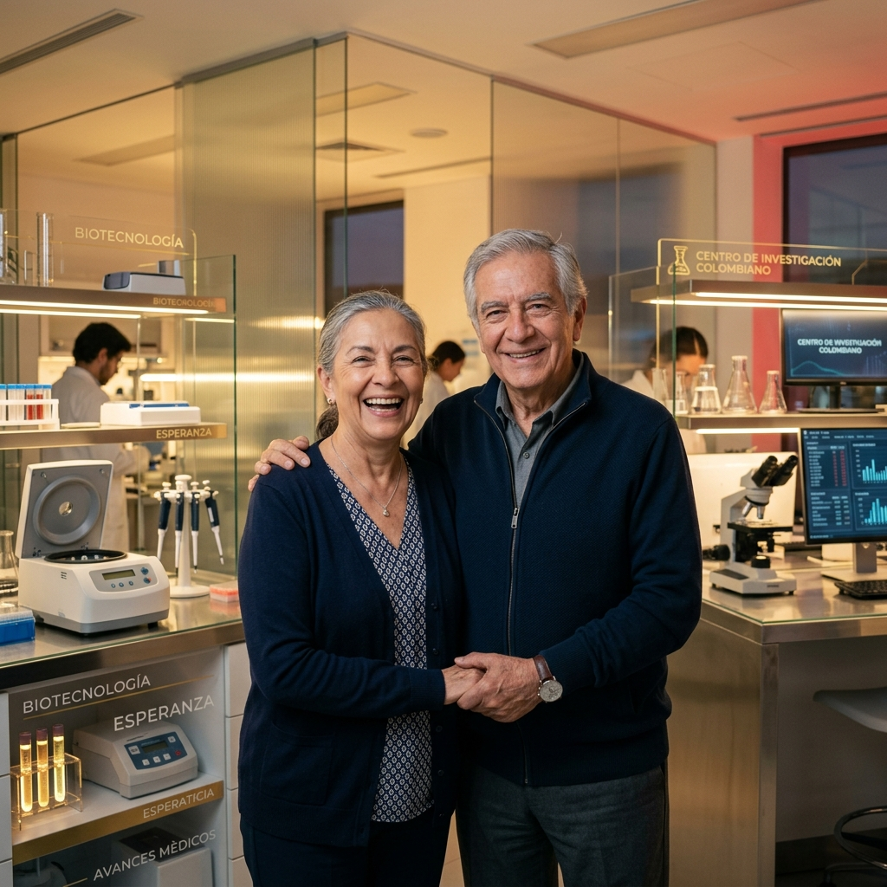
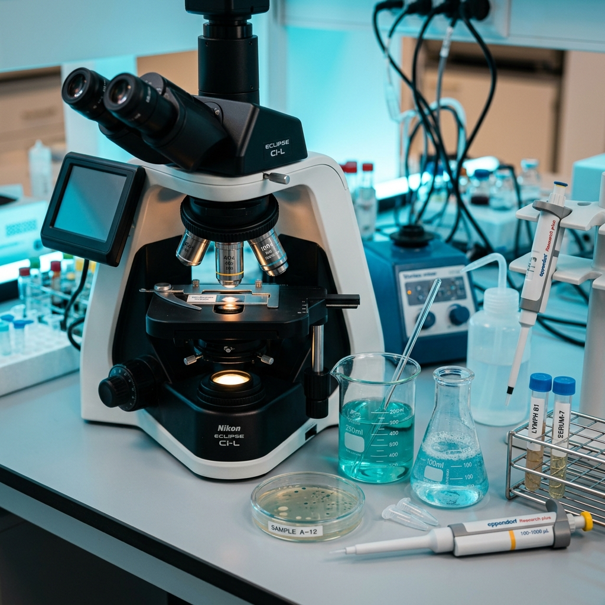

Ciencia para vivir más y mejor
El Centro de Investigación en Longevidad Saludable de la Universidad de la Costa lidera el estudio científico del envejecimiento óptimo y la longevidad extrema en Colombia, coordinando capacidades interdisciplinarias.

Liderazgo científico
Soporte académico CUC
Conoce el Centro
Explora la misión, visión y objetivos de nuestra unidad de investigación científica.
Nuestros pilares
Articulamos cuatro pilares fundamentales para generar ciencia con alto impacto y transferencia tecnológica.
Investigación científica
Estudios moleculares y demográficos profundos sobre el proceso de envejecimiento a nivel sistémico.
Innovación en salud
Uso de herramientas analíticas de última generación, big data y predicción con inteligencia artificial.
Impacto social
Políticas y guías metodológicas orientadas a optimizar el bienestar clínico del adulto mayor.
Transferencia
Divulgación activa y capacitaciones continuas dirigidas a la comunidad médica y gerontológica.
Proyectos destacados
Consulte los detalles del estudio insignia del Centro y los programas de trabajo.
Estudio de personas de 100+ años
El Proyecto Centenarios es la primera iniciativa científica orientada a estudiar personas de 100 años o más en la Costa Caribe Colombiana, recopilando de forma sistemática información clínica, biológica, genética y social detallada para identificar factores protectores de longevidad extrema.
Ver proyectos del Centro+0
Investigadores del Centro
+0
Participantes activos
+0
Publicaciones indexadas
+0
Alianzas globales
Alianzas estratégicas
Trabajamos de la mano con las principales instituciones académicas y clínicas para acelerar la transferencia tecnológica.
Últimas noticias
Notas de prensa, conferencias y resultados del Centro de Investigación.

Seminario de Epigenética de la Vejez
La Universidad de la Costa reunió a más de 12 expositores internacionales para discutir las firmas de metilación en centenarios.
Apertura de Cohorte Centenarios 2026
Iniciamos formalmente la convocatoria para sumar nuevos voluntarios de 100 o más años al biorepositorio del observatorio.
Alianza CUC y EIA por Biomarcadores
Ambas instituciones académicas firmaron un convenio de colaboración para aplicar machine learning en muestras de biobanco.
Haz parte de la investigación
Buscamos investigadores, estudiantes que deseen realizar sus posgrados académicos y voluntarios que deseen sumarse al Proyecto Centenarios.
Líneas de Investigación
Desarrollamos nuestras actividades científicas a través de líneas de investigación que abordan el envejecimiento.
Longevidad extrema
Estudia las características biológicas, clínicas y sociales de personas con edades excepcionales, con el fin de identificar factores asociados a una vida prolongada y saludable.
Biomarcadores de envejecimiento
Se enfoca en la identificación y análisis de indicadores biológicos que permiten comprender los procesos del envejecimiento y predecir condiciones de salud en la población.
Envejecimiento saludable
Analiza los factores que contribuyen a mantener la funcionalidad, autonomía y bienestar en etapas avanzadas de la vida.
Salud pública y envejecimiento
Examina el impacto del envejecimiento en los sistemas de salud y genera evidencia para la formulación de políticas públicas y estrategias de atención.
Factores sociales y ambientales
Estudia cómo las condiciones sociales, culturales y del entorno influyen en la longevidad y la calidad de vida de las personas.
Inteligencia artificial aplicada a salud
Utiliza herramientas de análisis de datos e inteligencia artificial para identificar patrones, predecir riesgos y generar conocimiento.
Proyecto Centenarios
Recopilación y biorepositorios clínicos para descifrar el proceso biológico del envejecimiento costero.
Estudio de personas de 100+ años
El Proyecto Centenarios es una iniciativa científica orientada a estudiar personas de 100 años o más, recopilando información clínica, biológica y social para identificar factores asociados a la longevidad extrema.
- Analizar características demográficas, clínicas y ambientales.
- Construir un biorepositorio de muestras biológicas locales.
- Identificar perfiles epigenéticos y biomarcadores moleculares.
Observatorio
Plataforma estratégica orientada al análisis, monitoreo y generación de conocimiento sobre la longevidad en Colombia.
Análisis de datos
Cruce de microdatos censales de adultos mayores en el territorio nacional.
Producción de informes
Publicación y divulgación trimestral de boletines e informes técnicos.
Indicadores demográficos
Métricas avanzadas sobre autopercepción y esperanza de vida funcional.
Apoyo a políticas
Recomendaciones directas basadas en evidencia para la toma de decisiones gubernamentales.
Panel de indicadores demográficos
Distribución de datos estadísticos (valores muestrales)
Distribución relativa (%)
Investigaciones
Consulte la colección bibliográfica indexada y resultados científicos oficiales de nuestro equipo.
Equipo
Profesionales de primer nivel dedicados al estudio y predicción de la longevidad y envejecimiento saludable.
Dr. Antonio Martínez
PhD en Genética Molecular y Envejecimiento Humano. Líder del Proyecto Centenarios.
Dra. Mariana Castro
PhD en Geriatría Clínica y Bioquímica. Coordinadora del Biorepositorio de Longevidad.
Ing. Roberto Díaz
Magíster en Inteligencia Artificial aplicada a Salud. Administrador del Observatorio.
Dra. Sofía Restrepo
PhD en Sociología de la Vejez. Directora de Vinculación Social e Impacto Comunitario.
Vinculación
Establezca una alianza o regístrese como voluntario clínico para contribuir al estudio de longevidad extrema.
Contacto
Póngase en contacto con la secretaría de investigaciones del Centro de Investigación.
Información de contacto
Escríbanos para coordinar visitas guiadas a nuestros laboratorios o establecer acuerdos bilaterales de investigación científica.
Dirección institucional
Calle 58 # 55 - 66, Barranquilla, Atlántico
Bloque C, Oficinas de investigación CUC
Correo electrónico
longevidad@cuc.edu.co
investigaciones@cuc.edu.co
Teléfonos de atención
+57 (605) 336 2200 Ext. 1452